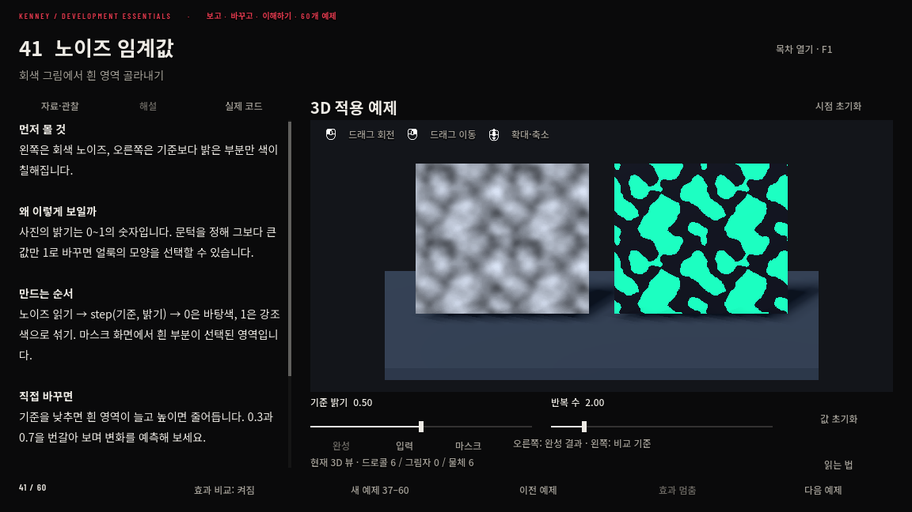

01. 먼저 차이를 보기
목차에서 번호나 이름으로 찾으세요. 왼쪽 비교 기준과 오른쪽 완성 효과를 보고, 해설에서 그 차이가 생기는 이유를 읽습니다.
보고 · 바꾸고 · 이해하기
작은 텍스처 한 장이 불꽃과 물결, 돌과 빛이 되는 과정.
60개 예제에서 원리를 읽고, 값을 바꾸며 차이를 확인하세요.
60개 예제 · 42개 조작형 실험 · 80개 조절값

목차 · 회전 뷰 · 자료 · 해설 · 실제 코드
목차 열기 F1 · 왼쪽 드래그 회전 · 오른쪽 드래그 이동 · 휠 확대 · 화면이 작으면 전체화면으로 보세요.
목차에서 번호나 이름으로 찾으세요. 왼쪽 비교 기준과 오른쪽 완성 효과를 보고, 해설에서 그 차이가 생기는 이유를 읽습니다.
슬라이더 하나씩 움직여 결과를 예상해 보세요. 선 두께, 반복 수, 소멸 기준을 바꾼 뒤 ‘값 초기화’로 처음과 비교할 수 있습니다.
‘자료·관찰’에서 원본 텍스처를, 신규 37~60에서는 ‘입력 → 마스크 → 완성’을 보세요. 실제 코드 탭으로 계산까지 이어집니다.
입력 이미지: Kenney Development Essentials (CC0). 예제·해설: 갈메기 개발 실험실. Godot Web 실행본. 이용 고지